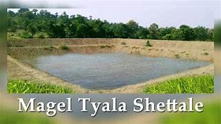

Under this scheme subsidy payable to individual farmer is minimum Rs.14433/- and maximum Rs.75000/- depending on the size of the farm pond. Out of total area, 82 percent area of agriculture land in the state is rainfed and is dependent on rainfall. Water stress due to uneven distribution of rains and periodic interruptions in rains leads to large reduction in crop production. Sometimes crops are also destroyed. Farm ponds, in such situation plays an important role in providing protective irrigation and reduces crop losses substantially. Considering this matter, Chief Minister Sustainable Agriculture Irrigation Scheme-Individual Farm Pond has been sanctioned by the Maharashtra State Govt. vide G.R. Dated 29th June,2022.
Benefit
1.Financial Assistance is given to farmers.
2.The subsidy payable to an individual farmer minimum Rs.14433/- and maximum Rs.75000/- depending on the size of the farmpond.
Eligibility
1.Farmer should hold at least (Minimum) 0.20 ha. land and Kokan region, while it is 0.40 ha. limit for rest of Maharashtra.
2.The applicant farmers land will have to be technically suitable for digging farm pond. So that the runoff rainwater can be stored in the farm pond through natural flow and recharge will be possible. In case of farm ponds without inlet and outlet there should be a natural source from where extra runoff during rainy season can be lifted and stored in farm pond.
3.Before applying for farm pond, the applicant farmers should not have availed the subsidy for farm pond, community tank or bodi in paddy bunding or any Government Scheme.
Documents Required
No Documents required for this Scheme.
Application Process:
Step 01: Farmer Registration
Step 02: Select user type and complete Aadhar authentication.
Step 03: Profile completion (Mobile number, Address details, Land & land holding information)
Step 04:Apply for Individual Farm Pond (a) select scheme Chief Minister Sustainable Agriculture Irrigation Scheme (b) Select farm pond type (with inlet outlet or without inlet outlet) (c) Select farm pond size.